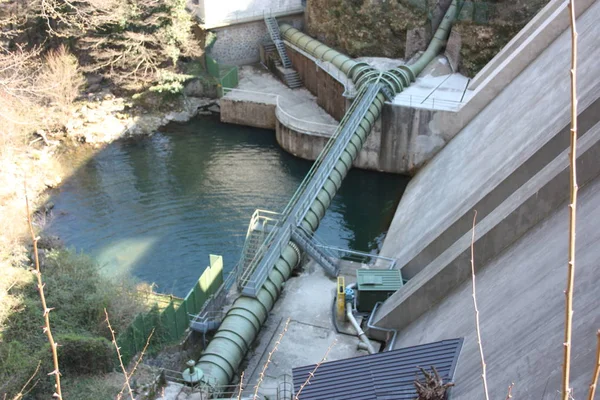
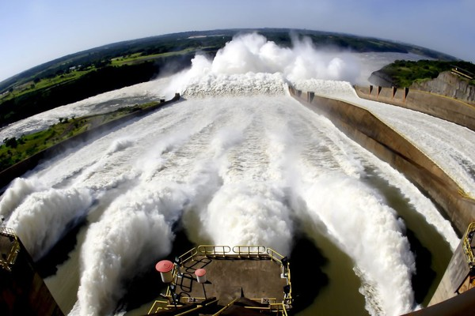
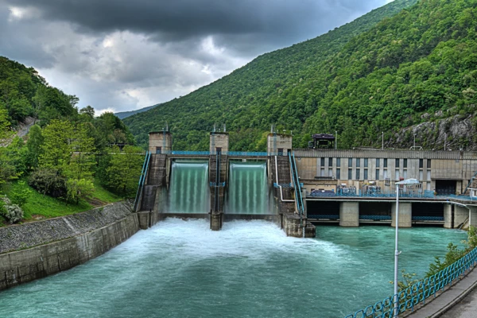

Hidrétrica
Assim como a energia solar e a eólica, essa energia também é uma energia limpa, acessível e renovável. Já que utiliza um meio natural que é a força das águas no seu processo.
A energia hidrelétrica é uma fonte de energia que utiliza o fluxo natural da água em movimento para gerar eletricidade. É um processo que ocorre nas instalações de usinas hidrelétricas, que tem o poder de captar e transformar essa força em energia.
Ainda que, no panorama mundial, as principais fontes de energia ainda sejam fósseis, o Brasil se destaca por apresentar uma matriz elétrica atendida majoritariamente composta por fontes renováveis.A energia hidrelétrica ainda é a principal delas, com mais de 67% da produção atual do país, mas sofre com os períodos de seca cada vez mais constantes nas regiões dos reservatórios.

Google - Image
Como funciona?
As barragens são construídas para armazenar grandes quantidades de água, criando um reservatório. Quando necessário, a água é liberada em um fluxo controlado através de turbinas, que são conectadas a geradores, e é aí que ocorre a transformação da energia cinética da água em energia elétrica. Esse processo é uma fonte confiável e sustentável de energia, já que a água é um recurso renovável e amplamente disponível em muitas regiões do mundo.
Assim como qualquer outra forma de geração de energia, a energia hidrelétrica apresenta uma dissipação energética no processo de geração. Essa dissipação pode ocorrer de várias maneiras, como perdas de energia devido ao atrito entre a água e as estruturas da barragem, nas turbinas e nos geradores, bem como nas linhas de transmissão elétrica.
Essas perdas podem ser minimizadas com o uso de tecnologias mais eficientes e melhores práticas de engenharia, mas é importante reconhecer que uma parte da energia gerada será inevitavelmente dissipada durante o processo de geração e transmissão. O objetivo é sempre buscar maneiras de reduzir essas perdas para tornar o processo mais eficiente e sustentável.

LinkedIn - Imagem
Eficiência
As hidrelétricas são de fato uma das formas mais eficientes de geração de energia em larga escala. Uma eficiência de 65,2% é uma estimativa razoável e está de acordo com muitas usinas hidrelétricas modernas. No entanto, a eficiência pode variar dependendo de vários fatores, incluindo o projeto da usina, a tecnologia utilizada, as condições do local e a manutenção adequada.
Comparadas a outras fontes de energia, as hidrelétricas têm uma alta eficiência porque aproveitam a energia cinética da água em movimento, que é uma fonte de energia densa e confiável. Além disso, as hidrelétricas são capazes de fornecer uma resposta rápida à demanda de eletricidade, tornando-as uma opção flexível para o fornecimento de energia elétrica.
No entanto, é importante reconhecer que as hidrelétricas também têm impactos ambientais, como a alteração dos ecossistemas aquáticos e terrestres, o que requer considerações cuidadosas ao planejar e operar essas instalações.

Google - Imagem
Fio d'água
Usina geradora de água corrente: Nessas instalações, não há necessidade de construir uma barragem para criar um reservatório de água. Em vez disso, a energia é gerada utilizando-se o fluxo natural de um rio ou riacho.
A água do rio é canalizada diretamente para as turbinas, onde sua energia cinética é convertida em energia mecânica. Essa energia mecânica é então usada para girar os geradores, que produzem eletricidade. Após passar pelas turbinas, a água é devolvida ao fluxo natural do rio a jusante da usina, sem alteração significativa em seu volume ou curso.

Google - Image
Reservatório
Central elétrica da bacia: Nas usinas de energia de reservatório, a água é armazenada em um reservatório, que pode ser natural (como um grande lago) ou artificial (criado por uma barragem), e depois liberada para acionar as turbinas quando necessário.
Esse tipo de usina oferece um alto nível de controle sobre a produção de eletricidade, pois a quantidade de água disponível e a vazão podem ser ajustadas conforme a demanda. Por exemplo, em momentos de pico de demanda de eletricidade, mais água pode ser liberada do reservatório para acionar as turbinas e gerar mais energia. Em períodos de menor demanda, a quantidade de água liberada pode ser reduzida.
Essa capacidade de controle torna as usinas de energia de reservatório uma opção muito flexível para o fornecimento de energia elétrica, permitindo ajustes rápidos na produção de acordo com as variações na demanda de eletricidade. No entanto, a gestão cuidadosa dos recursos hídricos é essencial para garantir a sustentabilidade desse tipo de usina, especialmente em regiões onde a água é um recurso escasso.

LinkedIn - Imagem
Armazenamento
Armazenagem central: Também chamada de usinas de armazenamento por bombagem, elas têm dois reservatórios em diferentes elevações, um a montante (mais alto) e outro a jusante (mais baixo).
Durante os períodos de menor demanda de energia, quando a eletricidade é menos necessária, o excesso de eletricidade gerada pode ser usado para bombear água do reservatório inferior para o reservatório superior, utilizando as mesmas turbinas como bombas. Essa água é então armazenada no reservatório superior, que funciona como uma reserva de energia potencial.
Quando a demanda de eletricidade aumenta, a água do reservatório superior é liberada, passando pelas turbinas para gerar eletricidade, como em uma usina hidrelétrica convencional. Esse processo permite que as usinas de armazenamento por bombeamento forneçam energia elétrica rápida e eficientemente quando a demanda é alta, enquanto armazenam energia durante os períodos de baixa demanda.
Essas usinas desempenham um papel importante no sistema elétrico, pois fornecem uma forma de armazenamento de energia de grande escala, ajudando a equilibrar a oferta e a demanda de eletricidade e contribuindo para a estabilidade e confiabilidade do sistema.

Google - Image